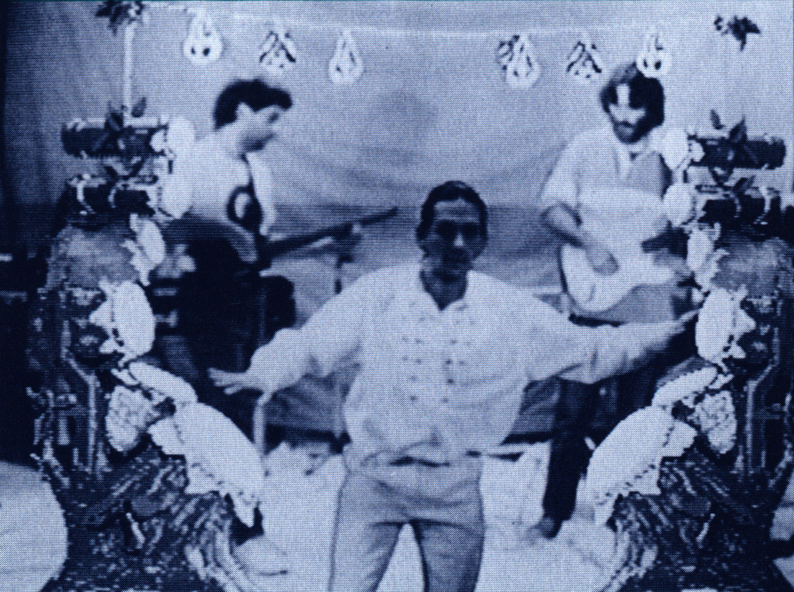
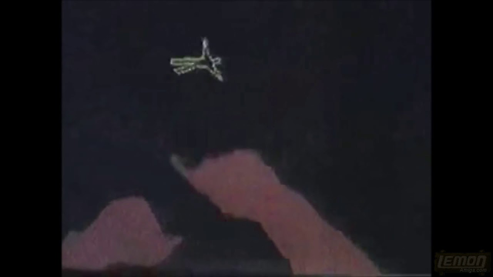

Mandala
Full-body VR on an Amiga

Overview
Mandala was a camera-based “mirror VR” system developed by The Vivid Group. Users saw themselves on a screen inside a computer-generated or video world and interacted with virtual objects through full-body movement — no headset, glove, or controller required. It was one of the first practical, unencumbered gestural VR installations and was used in museums, arcades, TV production, rehabilitation, and live performances.
Deep dive
The Vivid Group — Vincent John Vincent and Francis MacDougall — began work on video gesture control in 1983. The Mandala project started in 1982; the first prototype of what became the GestureXtreme engine ran on an Amiga 1000 in 1986. A video camera captured the user’s silhouette; the system digitized the image at up to 30 frames per second and placed it in its own bitplane, using pixel-level collision detection between the user and animated “actors” to trigger graphics, sounds, gravity effects, and state changes. Because the output was displayed on ordinary monitors, projectors, or video walls, Mandala installations could support multiple simultaneous participants and spectators. Notable deployments included the Tech2000 Gallery of Interactive Education in Washington, D.C., the CN Tower in Toronto, the Bell Canada Video Teleconferencing Forum, and later the Nick Arcade and Total Panic TV shows on Nickelodeon. Popular Science named Mandala one of the top breakthrough technologies of 1990. The technology evolved into GestureXtreme and eventually into GestureTek, whose patents later influenced Sony EyeToy and Microsoft Kinect.
The name “Mandala” was chosen from Sanskrit to evoke a person at the center of an interconnected, multidimensional universe whose creative input becomes part of a cosmic dance. Vincent John Vincent used the system to become what the company calls the world’s first “Virtual Reality Performer / Virtual Musician.”
Team & pioneers
- Vincent John Vincent Co-founder of The Vivid Group; choreographer and technologist who pioneered full-body video-silhouette interaction.
- Franck Lasowski Co-founder of The Vivid Group; developed the real-time computer-vision systems behind Mandala.
- The Vivid Group Toronto-based company that produced Mandala and licensed gesture-VR systems worldwide.
- Commodore Amiga The platform that made 30fps live-video silhouette processing affordable in 1986.
Media
